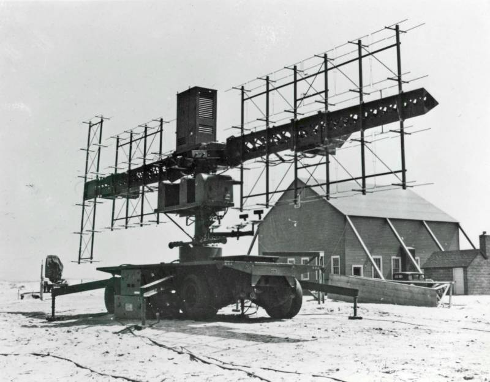
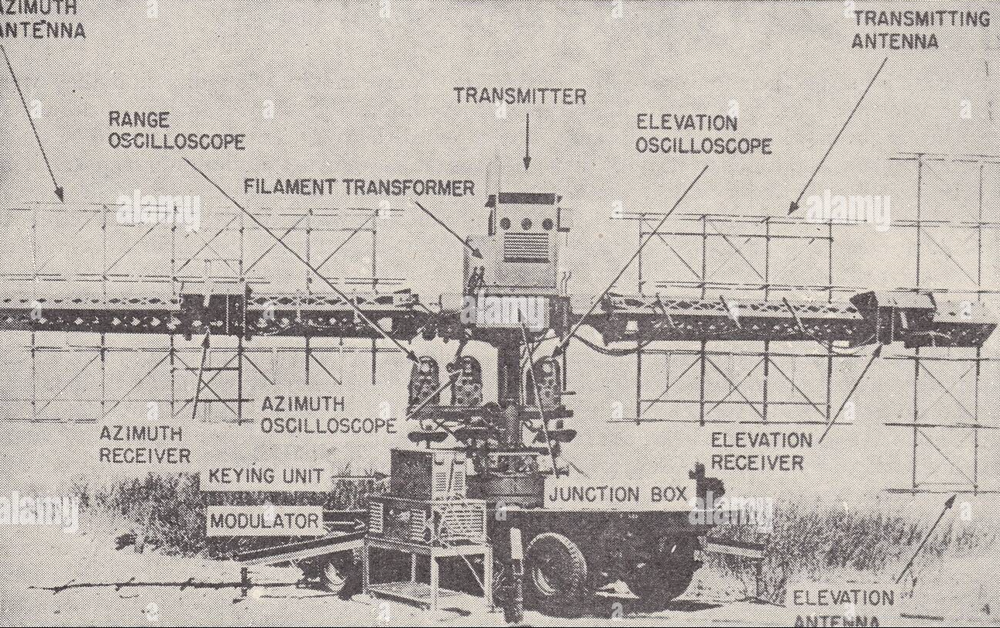
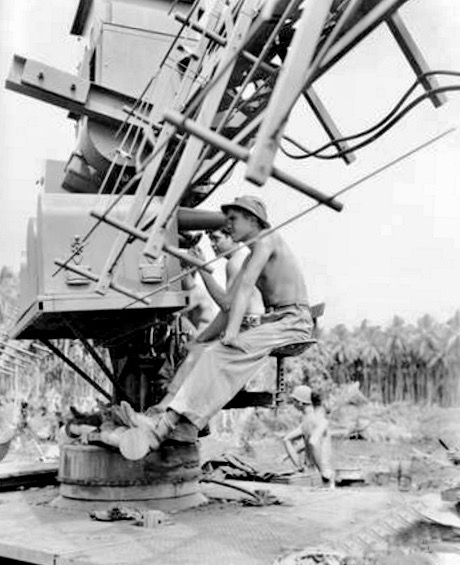
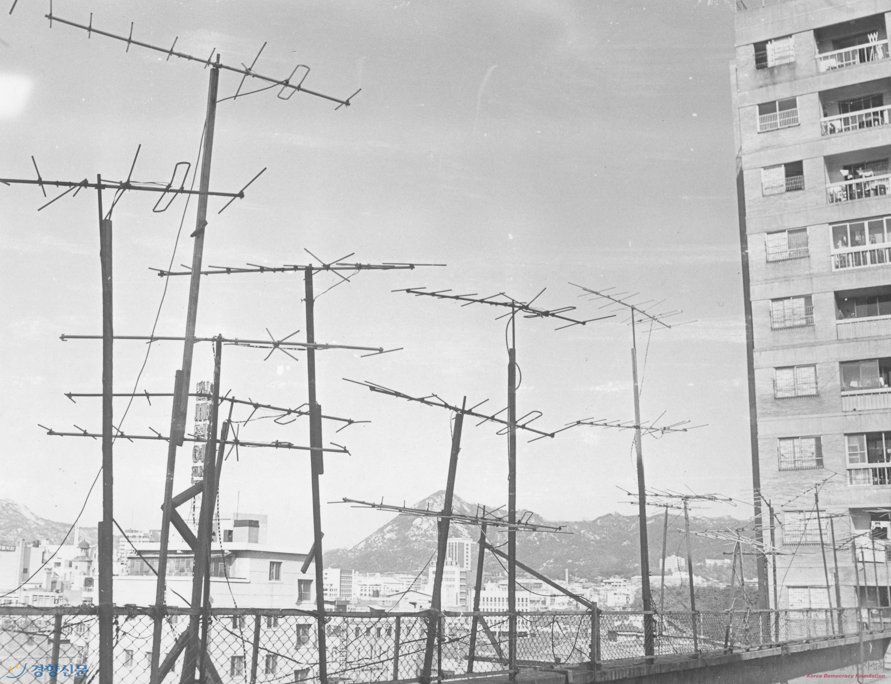
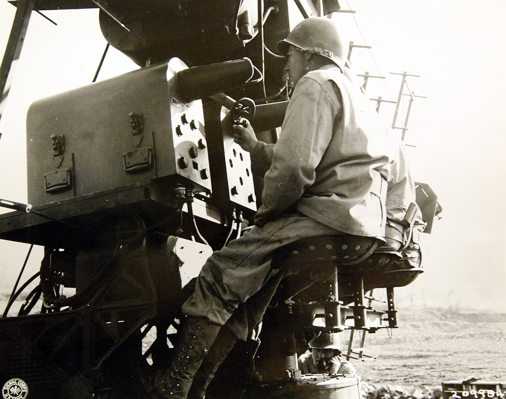
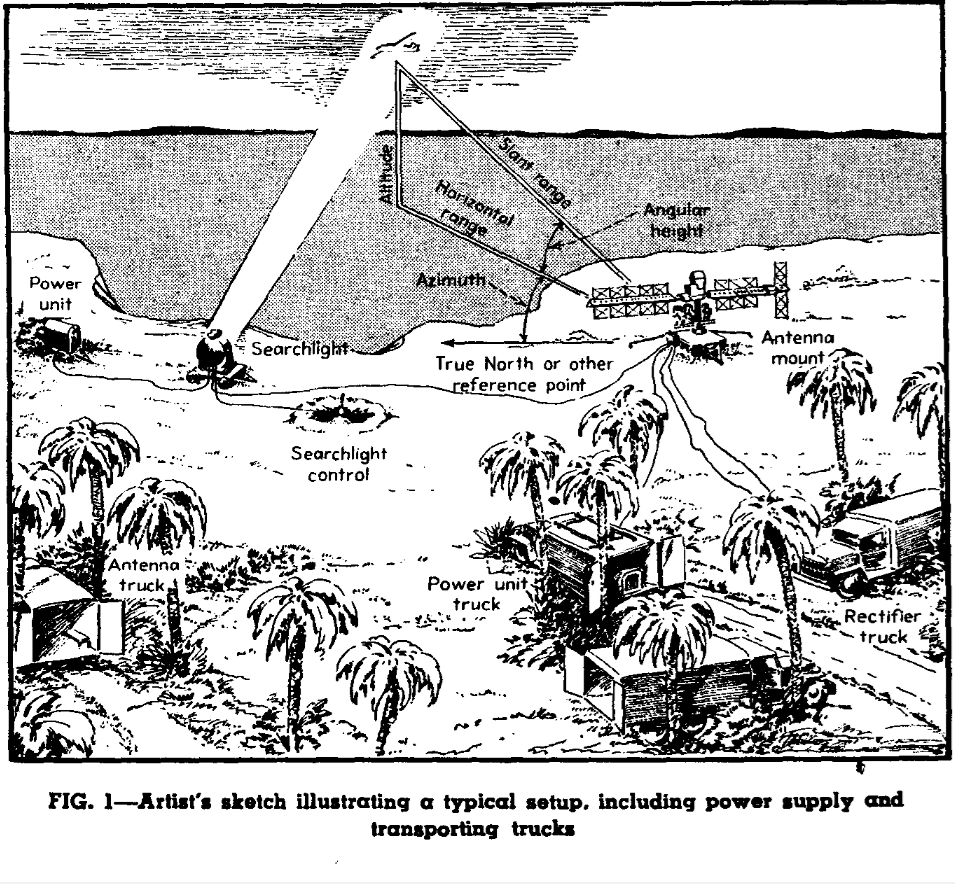
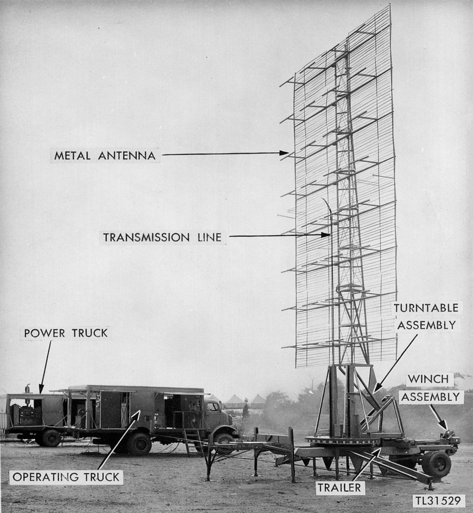
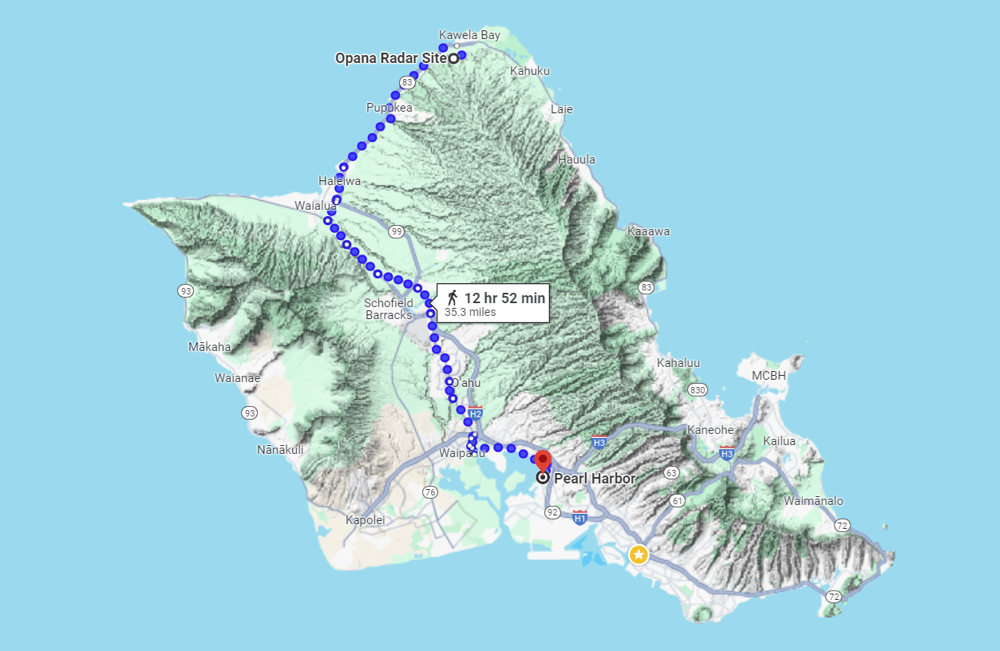
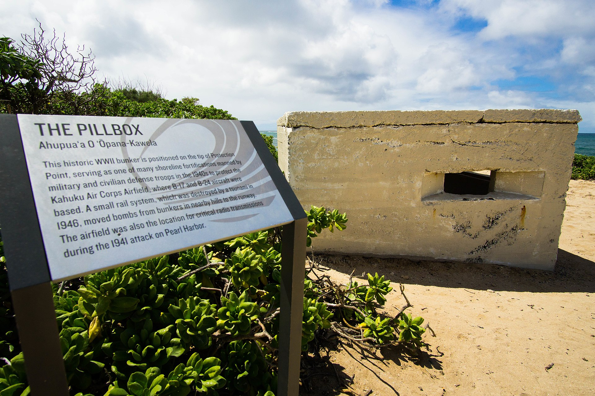
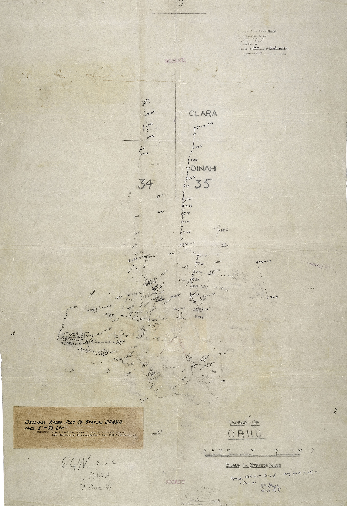

미육군의 레이더 개발 이야기 (4) - 두 레이더 이야기
게시: 2024-06-06T06:30:40+09:00
<SCR-268 레이더의 구조> 1937년 B-10 폭격기를 성공적으로 포착해내는 레이더 시범을 통해 탄력을 받은 미육군 통신사령부(Signal Corps)는 먼저 SCR-270 조기경보 레이더를 개발하고, 이어서 SCR-268 대공포 조준 레이더를 개발. SCR은 Signal Corps Radio을 뜻하는 이니셜. 조기경보 레이더라는 본질이 같았으므로 미해군의 CXAM 레이더와 근본적으로는 크게 다르지 않았던 SCR-270 레이더와는 달리, SCR-268 레이더는 일단 모양새부터 매우 달랐음. 일단 기본적인 모양새는 마치 옛날 범선의 돛대처럼 생겼음. 가운데 기둥 같은 세로축을 중심으로, 활대 같은 가로축이 달려 있는 형상. 그리고 그 가로 활대 같은 것에 침대 스프링틀 같은 것들이 덕지덕지 달린, 가로로 긴 십자가 같은 형태였음.

(SCR-268 레이더의 웅장한 모습. 이건 앞쪽에서 바라본 모습임.)
그냥 커다란 침대 스프링틀 하나가 달려 있어서 흔히 flying bedspring이라고 불렸던 미해군 CXAM 레이더에 비해, SCR-268이 이렇게 독특한 형상을 가지게 된 이유는 지난 편에서 설명한 lobe switching 때문. 로브 스위칭을 위해서는 안테나 사이의 간격이 꽤 넓어야 했음.
먼저, SCR-268을 뒤에서 바라볼 때, 그 왼쪽 가로축에는 방위각을 측정하는 안테나 배열 세트(array)가 달려 있었는데, 그 가로로 긴 방위각 어레이에는 쌍극자 안테나(dipole)이 6 (가로) x 4 (세로)로 달려있었음. 오른쪽 가로축에는 고도를 측정하는 안테나 어레이가 세로로 길게 달려 있었는데, 그 다이폴 구성은 2 (가로) x 6 (세로)였음. 그리고 그 중간, 정확히 말하자면 오른쪽 가로축의 왼쪽 부분에는, 송신 안테나 어레이가 4 (가로) x 4 (세로)로 달려 있었고, 거기서 방출되는 레이더 빔은 거의 원형에 가까운 형태로서 퍼짐각은 약 10도였음.

(SCR-268의 요소별 설명. 이게 뒤에서 본 모습인데, 왼쪽 활대에 달린 가로로 긴 6 x 4 어레이가 방위각 수신 안테나, 오른쪽 활대의 오른쪽 끝에 붙은 세로로 긴 2 x 6 어레이가 고도 수신용 안테나, 그리고 그 왼쪽의 4 x 4 어레이가 송신 안테나임.)
잠깐, 가운데 안테나 어레이가 송신용이라면, 왼쪽의 방위각 측정 어레이와 오른쪽 고도 측정 어레이는 수신용이란 말인가? 맞음. 지난 편에서도 언급했지만, 로브 스위칭에 대해 읽다보면 송신파의 lobe를 생각하게 되지만, SCR-268에 구현된 lobe switching은 반사파를 수신할 때 적용되는 것임. 왼쪽의 6 x 4 안테나 어레이는 가로로 넓기 때문에 방위각 측정을 담당했고, 오른쪽의 2 x 6 안테나 어레이는 세로로 길쭉하기 때문에 고도 측정을 담당하는 것.

(이 사진에서는 안테나 어레이의 dipole 요소가 잘 보이는데, 앞에 붙은 짧은 막대기가 다이폴 안테나이고, 그 뒤에 붙은 긴 막대기가 야기 안테나 요소 중 하나인 reflector임.)

(분명히 SCR-268 양쪽 끝의 안테나 어레이들은 수신용이라고 했는데 왜 지향성 안테나인 야기 안테나 형태로 되어 있느냐고 궁금해하실 분들이 있을 텐데, 1970~80년대만 해도 서울 각 동네의 높은 건물 옥상은 저런 야기 안테나로 뒤덮혀 있다시피 했음. 저거 다 TV 수신 안테나임. 즉, 낮은 강도의 전파를 수신할 때도 야기 안테나와 같은 지향성 안테나가 큰 도움이 됨.)
그런데 구체적으로 어떻게 측정할까? CXAM이나 SCR-270 같은 조기경보 레이더는 탐지거리가 100km가 넘는 대신 적기를 천천히 추적하며 감시할 여유가 있었음. 그러나 SCR-268은 최대 탐지거리가 30km 정도에 불과했고, 대공포 조준용 레이더라는 특성상 빠르게 움직이는 적기를 재빨리 포착해야 했음. 그렇게 시간적 여유도 없는데 방위각과 거리, 게다가 CXAM 레이더에서는 사실상 불가능했던 고도까지 측정한다는 것은 하나의 레이더 스코프로는 사실상 불가능.

(SCR-268 레이더에는 언제나 저렇게 3명의 운용병이 각자의 스코프와 핸들을 담당하도록 되어 있었음.)
그래서 3개의 탐지 요소, 즉 방위각과 거리, 그리고 고도에 대해 각각 하나씩 총 3개의 radar scope를 마련했고, 거기에 총 3명의 운용병을 앉혔음. 이 운용병들은 각자 맡은 스코프에 나타나는 2개의 blip(위로 솟는 신호파)의 높이가 똑같아 질 때까지 각자의 핸들을 돌려 안테나 레이더의 가로축 혹은 세로축을 회전시키면 되는 것. 그래서 이 3명의 운용병이 각자 맡은 탐지 요소의 숫자를 입력하면 그 숫자들이 M7 gun director 및 탐조등으로 곧장 전달되었음.

(SCR-268 레이더의 전개도. 발전기 트럭, 정류기 트럭, 그리고 안테나 세트를 분해해 실을 트럭 2대, 이렇게 총 4대의 트럭이 한 세트로 움직였음. 거기에 언제나 저렇게 탐조등이 항상 따라다니며 불완전한 SCR-268의 해상도를 보완하는 역할을 했음.)
이렇게 SCR-268은 CXAM이나 SCR-270에 비해 훨씬 빨리, 훨씬 정확하게 방위각과 거리, 그리고 특히 CXAM과는 달리 고도를 파악할 수 있었고, 이는 과달카날 전투에서 큰 도움이 되었음. 그 이야기는 다음 주에... <진주만 레이더 SCR-270> SCR-270은 조기경보 레이더라는 본질 덕분에 오차 각도가 매우 작아야 한다는 요구가 없었으므로 개발이 상대적으로 좀 더 쉬웠음. 덕분에 아직 미국이 WW2에 참전하기 전인 1940년 10월에 이미 현장 배치를 완료. 첫 배치는 독특하게도 파나마 운하의 대서양 측면에 있는 Fort Sherman. 당시 미국이 독일에 대해 심각하게 생각하고 있었으며, 일본의 위협은 상대적으로 무시했다는 것을 알 수 있는 부분. 이어서 12월에는 두 번째 SCR-270가 파나마 운하의 태평양 측면에도 설치됨. 당시 이 레이더를 제조하던 회사는 Westinghouse Electric Corporation였는데, 1941년 말까지 100개 세트를 완성.

(SCR-270 레이더의 구조. 그냥 방위각과 거리만 탐지하는 수준이다보니 SCR-268에 달린 안테나 어레이 하나로 구성되어 매우 단순해 보이는 형상.)
이렇게 다량 생산된 SCR-270은 태평양 한가운데의 미군 기지가 있는 섬들, 가령 필리핀과 하와이에도 배치됨. SCR-270이 있었다면 진주만에 대한 일본해군의 공습을 막을 수 있지 않았을까? 그런데 있었음. 진주만이 있는 오아후 섬, 그것도 북서쪽에서 날아오던 일본 함재기들을 포착하기 딱 좋은 위치인 북쪽 해변 높은 산의 Opana 사이트에 배치되어 있었음. 그런데 왜 그렇게 속수무책으로 당했을까? 결론적으로는 새로운 기술과 장비에 따른 육군의 운용 체계가 설립되어 있지 않았기 때문.

(오파나 레이더 사이트와 진주만의 위치)

(지금도 남아있는 오파나 레이더 사이트의 안내판) 진주만 습격 당일이던 1941년 12월 7일 아침 7시, 오파나 레이더 사이트에는 두 명의 일병들이 레이더를 만지작 거리고 있었음. 실은 주말 아침이었던 이 시간대는 원칙에 따르면 레이더 운용 시간이 아니었음. 이 두 명의 기특한 일병들은 자신들을 식당에 데려다 줄 트럭이 늦어지자 놀면 뭐 하나 싶어 레이더 조작 연습을 지들끼리 하고 있었던 것. 그런데 그렇게 연습을 하던 중에 대규모 편대가 포착되자 작은 임시 지휘소가 있던 Fort Shafter에 즉각 전화를 걸어 이 사실을 알림. 이 전화를 받은 것도 당직을 서던 일병이었는데, 마침 레이더 작도실에 들어오던 Kermit Tyler 중위에게 이 사실을 보고. 타일러 중위는 '아무 것도 아니니 무시하라'고 지시. 당직 일병은 오파나 레이더 사이트의 졸병들에게도 그렇게 알렸는데, 오파나 레이더 사이트의 졸병들은 '내 평생(?) 이렇게 거대한 항공기 편대는 본 적이 없다'라며 흥분하여 소리를 질러댔음. 그러자 당직 일병도 뭔가 심각하다는 것을 눈치채고 바로 옆의 타일러 중위에게 역시 흥분한 목소리로 보고.

(기특한 졸병들이 성실하게 작성했던 12월 7일 아침의 일본 함재기들의 항적. 이들은 타일러 중위가 '무시하라'는 지시를 내린 뒤에도 성실하게 이 정체불명의 편대를 추적했으며, 표적을 놓친 7시 40분에야 중단.) 그러나 타일러는 매우 침착하게 다시 '무시하라'고 했는데, 이유는 그가 마당발이었기 때문. 그는 폭격기 편대의 친구로부터 그 날 아침에 본토로부터 B-17 편대가 하와이에 도착한다는 것을 들어서 알고 있었고, 심지어 그 폭격기 편대가 하와이 음악을 틀어주는 오아후 섬 라디오 방송국의 전파를 이용하여 항법 계산을 하고 있다는 것도 알고 있었음. 딱 그 시간대가 겹쳤기 때문에 타일러 중위는 안심했던 것. 실제로 그 B-17 편대는 그 시간대에 도착했고 그래서 일본기들에게 지상에서 박살이 남. 가장 아쉬웠던 부분은 이 레이더 포착 사실이 공습 직후의 혼란 속에서 끝내 사령부에 보고되지 못했다는 것. 일본 함대 추격에 나선 미해군은 덕분에 진짜 일본 함대의 위치였던 북서쪽이 아니라, 진주만 현장에서 눈으로 보았을 때 적기들이 나타난 남서쪽 방향을 집중 수색. 이후 미군 조사위원회는 그 레이더 사이트에 바로 1주일 전에 배치된 타일러 중위가 아무런 레이더 운용 훈련이나 교리 학습을 받지 않은 점을 지적하며 타일러 중위에게는 아무런 잘못이 없다는 결론을 내렸음. 아무런 불이익을 주지도 않았음. 사관학교 출신이 아니었던 타일러는 전쟁 내내 잘 복무하고 전후에 창설된 미공군으로 옮긴 뒤에도 잘 승진했으며, 1961년 중령 계급으로 전역.